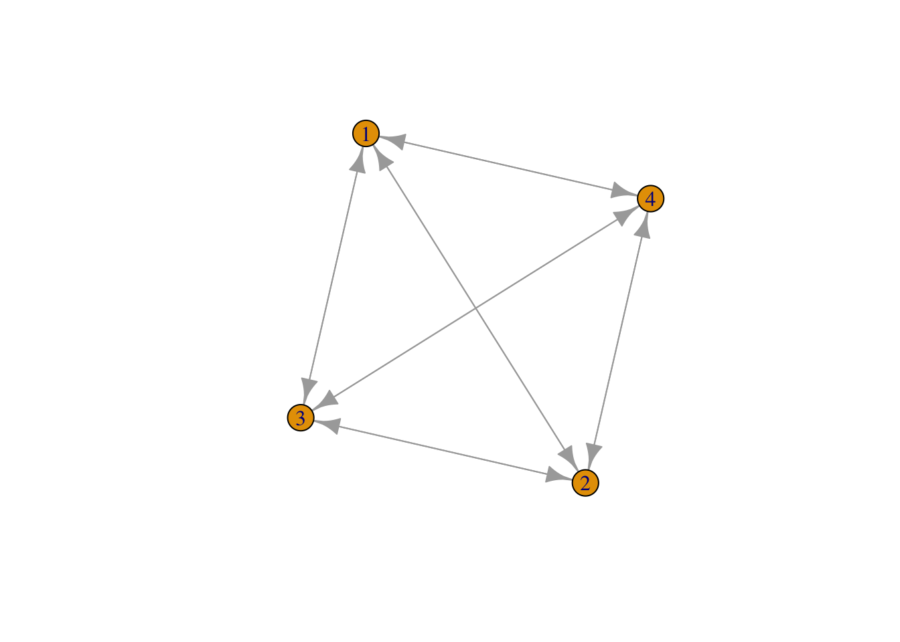
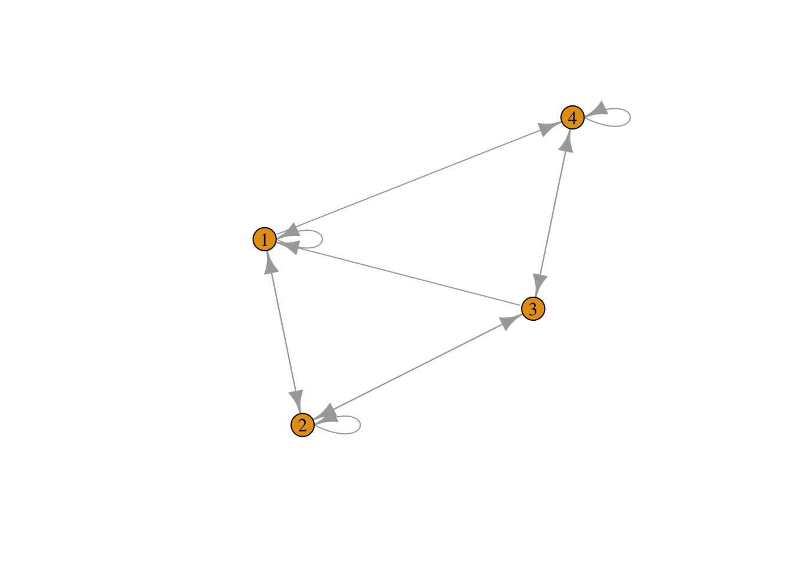
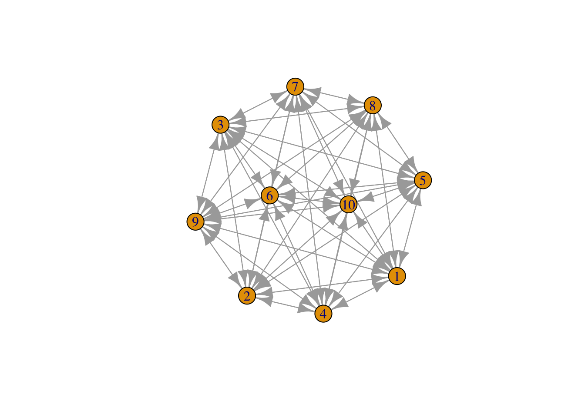

Last compiled on September, 2025
Network description
Found out how to add a new page.
Read the literature.
Reconfigured my research topic, and wrote the introduction based on my new questions.
numbers <- round(runif(10000), 0)
fake <- matrix(data = numbers, nrow = 100, ncol = 100, byrow = FALSE, dimnames = NULL)
diag(fake) <- 0
rowSums(fake)#> [1] 53 50 48 49 47 50 60 55 47 57 52 48 46 54 52 46 55 44 49 48 52 49 48 47 49 49 58 52 50 56 58
#> [32] 48 50 45 45 47 41 60 46 50 48 53 52 46 42 47 46 46 53 41 47 52 52 47 50 46 49 54 49 48 48 49
#> [63] 56 50 56 48 54 51 46 48 44 48 44 48 56 60 55 48 51 45 39 52 43 48 57 55 54 52 44 44 52 55 50
#> [94] 50 50 48 47 50 51 49mean(fake)#> [1] 0.4973# Transposing the matrix
transposed_fake <- t(fake)
print(fake)#> [,1] [,2] [,3] [,4] [,5] [,6] [,7] [,8] [,9] [,10] [,11] [,12] [,13] [,14] [,15] [,16] [,17]
#> [1,] 0 1 1 0 1 1 1 1 1 0 0 0 1 1 1 0 1
#> [2,] 0 0 0 1 1 0 1 0 1 1 0 0 1 1 1 1 1
#> [3,] 1 1 0 0 1 1 0 1 1 0 1 1 1 0 0 0 0
#> [4,] 1 0 0 0 0 1 1 0 0 0 0 1 0 0 1 0 1
#> [5,] 0 0 0 1 0 1 1 0 1 0 0 1 1 0 1 0 0
#> [6,] 1 0 0 0 0 0 1 0 0 1 1 0 1 1 0 1 1
#> [7,] 1 0 1 1 1 1 0 1 1 0 1 1 1 0 0 1 0
#> [8,] 0 1 1 0 0 1 1 0 1 0 0 1 1 1 1 1 1
#> [9,] 0 1 0 1 1 0 0 0 0 0 0 1 0 1 0 1 1
#> [10,] 0 0 1 1 1 0 0 1 1 0 1 0 0 1 1 1 1
#> [11,] 0 1 1 0 0 0 1 0 0 1 0 0 0 1 1 1 1
#> [12,] 1 1 1 0 0 0 1 0 1 0 1 0 0 1 0 0 0
#> [13,] 1 0 0 1 0 0 0 1 1 1 0 0 0 0 1 0 0
#> [14,] 0 0 0 0 0 1 1 1 0 0 1 0 1 0 1 0 0
#> [15,] 1 1 0 1 0 1 0 0 0 1 1 1 1 0 0 1 1
#> [16,] 0 0 0 0 0 0 1 0 0 1 1 0 1 1 0 0 0
#> [17,] 0 1 1 1 0 1 1 1 1 1 0 0 1 1 1 1 0
#> [18,] 1 0 1 0 1 1 0 0 1 0 1 1 1 1 1 0 1
#> [19,] 1 0 1 0 0 1 0 0 0 0 0 0 0 0 1 0 0
#> [20,] 0 0 1 0 1 1 0 0 0 0 0 1 0 1 0 0 1
#> [21,] 1 0 1 0 1 1 0 1 0 1 1 1 0 0 0 1 1
#> [22,] 0 1 0 0 1 0 1 0 0 0 1 0 1 1 0 1 1
#> [23,] 1 1 0 1 0 1 1 0 1 0 0 0 0 1 0 1 1
#> [24,] 0 1 1 1 1 0 0 0 1 0 0 1 0 1 0 1 0
#> [25,] 0 0 1 1 0 1 1 0 0 1 0 0 1 1 0 1 1
#> [26,] 1 1 1 0 1 0 0 0 1 0 1 1 1 1 0 0 0
#> [27,] 0 0 1 1 0 0 0 1 1 1 1 1 1 1 1 0 0
#> [28,] 0 0 1 1 0 0 0 0 0 1 0 1 1 1 0 0 1
#> [29,] 0 0 0 1 0 1 0 0 1 0 0 1 1 1 1 1 1
#> [30,] 1 1 1 0 1 1 0 1 1 0 1 0 0 1 1 1 1
#> [31,] 1 0 1 0 0 0 0 0 1 1 1 0 1 1 0 1 0
#> [32,] 1 0 1 0 1 1 0 1 1 1 1 1 1 1 1 0 1
#> [33,] 1 1 0 1 1 1 0 0 0 1 0 1 0 0 1 1 1
#> [34,] 0 0 0 0 0 0 1 0 1 1 1 0 0 0 1 1 1
#> [35,] 1 1 0 0 1 1 0 1 0 0 0 0 0 0 1 0 1
#> [36,] 0 1 0 1 0 0 0 0 0 0 0 0 1 1 1 0 0
#> [37,] 0 1 0 1 0 0 0 0 1 0 0 1 0 0 1 0 1
#> [38,] 1 0 1 1 1 1 1 0 0 0 1 1 0 0 1 1 1
#> [39,] 0 1 1 0 0 1 0 1 0 0 1 1 1 0 0 0 0
#> [40,] 1 1 0 0 1 0 1 0 1 1 0 0 1 0 1 1 1
#> [41,] 0 0 1 0 1 1 1 0 0 1 1 1 0 0 1 1 1
#> [42,] 0 1 0 1 0 1 1 0 0 0 1 0 0 1 0 0 0
#> [43,] 0 1 1 0 0 0 1 1 0 0 1 1 0 1 1 0 0
#> [44,] 1 0 0 0 1 1 1 1 1 0 1 1 0 0 1 0 0
#> [45,] 1 0 0 1 1 0 1 0 1 1 1 0 0 0 1 0 0
#> [46,] 1 0 0 0 1 1 1 1 0 0 0 1 0 1 1 1 1
#> [47,] 0 1 0 0 1 0 1 0 1 1 0 0 0 0 1 0 0
#> [48,] 0 0 0 0 1 1 1 1 1 0 0 1 0 1 1 1 1
#> [49,] 0 0 1 1 0 0 0 1 0 0 0 1 0 0 0 1 0
#> [50,] 1 1 1 1 1 1 0 0 1 0 0 0 0 1 0 1 0
#> [51,] 0 1 0 0 0 0 1 0 1 0 1 1 1 1 1 0 1
#> [52,] 0 0 0 0 0 1 1 1 1 0 1 0 1 0 0 0 0
#> [53,] 0 0 1 0 1 1 0 0 0 0 0 0 1 1 0 0 1
#> [54,] 1 0 0 1 0 0 0 1 0 0 0 0 1 0 0 0 0
#> [55,] 1 1 0 0 0 1 1 0 1 0 1 0 0 1 0 0 1
#> [56,] 1 0 1 0 1 1 0 0 1 1 1 1 1 0 0 0 0
#> [57,] 0 1 0 1 0 0 0 0 0 0 1 0 0 1 1 1 0
#> [58,] 0 1 0 1 0 1 1 0 1 1 0 1 0 1 0 0 1
#> [59,] 0 0 1 0 0 0 1 1 1 1 0 0 0 1 1 1 0
#> [60,] 0 1 1 1 1 0 1 0 0 0 0 0 1 0 0 0 0
#> [61,] 0 0 1 0 0 1 1 1 0 1 0 1 0 1 0 1 1
#> [62,] 0 1 0 1 1 1 1 0 1 1 1 0 0 1 1 1 1
#> [63,] 0 1 1 0 1 1 1 0 1 1 1 1 1 0 1 0 1
#> [64,] 0 0 1 1 0 0 0 0 0 1 1 1 0 1 0 0 1
#> [65,] 0 0 0 0 1 1 0 1 1 1 0 1 1 0 0 0 1
#> [66,] 1 1 1 0 0 1 0 0 0 0 1 1 1 1 0 0 1
#> [67,] 0 0 0 1 1 0 0 1 0 1 0 1 0 0 0 0 1
#> [68,] 1 1 1 0 1 0 0 0 0 0 0 1 0 1 1 0 1
#> [69,] 1 0 0 1 0 0 1 1 1 0 1 0 1 1 1 1 0
#> [70,] 1 0 1 0 1 0 0 0 1 1 0 1 1 0 0 0 0
#> [71,] 0 1 1 0 0 1 0 1 0 1 1 0 1 0 0 1 1
#> [72,] 1 0 1 0 0 1 0 1 1 0 0 1 0 0 1 1 1
#> [73,] 1 0 1 1 0 0 1 0 0 0 0 1 0 1 0 0 0
#> [74,] 0 1 1 0 1 0 0 0 0 0 0 1 0 1 1 0 0
#> [75,] 0 1 1 1 1 0 0 0 1 0 1 0 1 1 1 1 1
#> [76,] 0 1 0 1 1 1 1 1 0 1 1 0 0 1 1 1 0
#> [77,] 0 0 0 1 0 0 1 1 0 1 1 1 1 0 0 0 1
#> [78,] 0 1 0 0 1 0 0 1 1 1 0 0 1 1 0 0 0
#> [79,] 0 1 0 1 1 0 0 1 1 1 1 0 1 1 0 1 1
#> [80,] 0 1 0 1 1 0 1 1 0 1 0 0 1 0 0 0 0
#> [81,] 1 1 1 0 0 0 1 0 1 1 1 0 0 1 0 1 0
#> [82,] 0 0 1 1 0 0 1 1 1 0 0 0 0 0 1 1 0
#> [83,] 0 1 0 1 1 1 0 1 1 0 0 1 0 0 0 0 0
#> [84,] 0 0 1 1 0 0 0 0 1 0 1 0 1 1 0 0 1
#> [85,] 1 0 0 0 1 0 1 1 0 0 1 1 1 0 1 0 1
#> [86,] 0 0 0 0 0 1 1 1 0 0 1 1 0 1 0 1 1
#> [87,] 1 1 1 0 1 0 1 0 0 1 1 0 1 0 1 1 0
#> [88,] 1 0 1 0 1 1 0 1 1 1 0 0 0 1 0 0 1
#> [89,] 1 1 0 0 0 0 1 0 0 1 1 0 1 0 0 1 0
#> [90,] 0 0 0 1 0 1 0 1 0 0 1 0 0 1 1 1 0
#> [91,] 1 1 1 1 1 1 1 0 0 0 1 1 1 0 1 1 1
#> [92,] 1 1 1 1 1 0 1 0 1 0 1 1 1 1 0 0 1
#> [93,] 1 1 0 0 0 1 1 0 1 0 1 1 1 1 1 1 0
#> [94,] 1 1 1 0 0 0 0 1 1 1 1 0 1 0 1 1 0
#> [95,] 1 0 0 0 0 1 0 0 1 0 1 1 1 1 0 0 0
#> [96,] 0 1 1 0 0 0 0 0 0 1 1 1 1 1 0 0 1
#> [97,] 0 1 0 1 0 1 0 1 1 1 0 1 1 1 0 1 0
#> [98,] 0 1 0 0 0 1 1 0 1 1 1 1 1 0 1 0 0
#> [99,] 0 0 1 1 1 1 0 0 1 1 1 0 1 1 0 0 0
#> [100,] 1 1 1 0 1 0 1 1 1 0 0 1 0 1 0 1 1
#> [,18] [,19] [,20] [,21] [,22] [,23] [,24] [,25] [,26] [,27] [,28] [,29] [,30] [,31] [,32]
#> [1,] 0 0 0 1 1 0 0 1 1 1 0 0 1 0 1
#> [2,] 0 1 0 1 0 0 0 0 0 1 1 1 1 1 0
#> [3,] 1 0 1 0 0 1 1 1 1 0 1 1 0 1 0
#> [4,] 0 1 1 0 1 1 0 0 1 1 1 0 0 0 1
#> [5,] 1 0 1 0 0 0 1 1 0 1 1 0 0 0 1
#> [6,] 0 0 0 1 1 0 1 1 1 0 0 0 1 0 1
#> [7,] 1 1 0 1 1 1 1 1 0 0 1 1 0 1 1
#> [8,] 0 0 1 0 0 1 1 0 1 1 1 0 0 0 0
#> [9,] 1 1 0 1 1 1 1 0 0 0 0 1 1 1 0
#> [10,] 0 1 0 1 1 1 1 0 0 0 0 1 0 1 0
#> [11,] 1 1 1 0 1 0 0 0 0 0 1 0 1 1 1
#> [12,] 1 1 0 0 0 1 0 0 1 1 1 0 0 1 0
#> [13,] 0 0 1 1 1 0 1 1 1 1 0 0 0 0 1
#> [14,] 1 0 0 0 1 1 0 0 1 0 1 1 1 0 1
#> [15,] 1 0 1 1 0 1 1 1 1 0 0 0 0 0 1
#> [16,] 1 1 0 1 1 0 0 0 0 0 1 0 0 1 1
#> [17,] 0 1 1 0 0 1 1 1 1 0 1 1 1 0 0
#> [18,] 0 1 1 1 1 1 0 1 0 0 0 0 0 1 1
#> [19,] 1 0 1 0 1 1 0 0 1 1 1 0 0 1 1
#> [20,] 1 0 0 0 0 1 1 0 1 1 1 0 0 1 1
#> [21,] 0 1 1 0 0 1 1 1 0 1 0 0 1 0 1
#> [22,] 1 1 1 0 0 0 1 1 1 0 1 0 0 0 1
#> [23,] 0 0 1 0 1 0 1 1 1 1 1 1 1 0 1
#> [24,] 1 1 1 0 1 1 0 0 0 0 1 1 0 1 0
#> [25,] 1 0 1 1 1 0 0 0 1 1 0 0 0 1 1
#> [26,] 0 0 0 1 1 1 1 1 0 0 0 1 0 1 0
#> [27,] 1 1 1 0 0 0 0 0 1 0 0 0 0 1 1
#> [28,] 0 1 1 1 1 1 1 0 0 1 0 0 0 1 1
#> [29,] 1 1 0 1 1 0 1 1 1 1 0 0 0 0 1
#> [30,] 0 1 1 0 0 0 1 1 0 1 1 0 0 1 0
#> [31,] 0 1 0 1 1 1 1 1 0 0 0 1 0 0 1
#> [32,] 0 0 0 0 0 0 1 1 0 0 1 1 0 1 0
#> [33,] 1 0 0 1 1 1 0 0 1 0 1 0 0 0 0
#> [34,] 1 0 1 0 0 0 0 0 1 1 1 1 1 1 1
#> [35,] 0 0 1 0 1 0 1 0 1 0 0 0 0 1 1
#> [36,] 1 0 0 0 0 1 0 0 1 1 1 1 1 0 1
#> [37,] 0 0 0 1 1 0 1 0 1 0 1 1 1 0 0
#> [38,] 1 1 1 1 0 0 1 0 0 1 1 0 1 1 0
#> [39,] 0 0 1 1 1 1 0 1 0 1 0 0 1 1 0
#> [40,] 1 1 0 1 0 0 1 1 1 0 0 0 0 1 1
#> [41,] 1 0 0 1 0 1 0 1 1 1 1 1 0 0 1
#> [42,] 0 0 1 1 0 1 1 0 1 0 1 0 0 0 1
#> [43,] 1 1 0 0 1 1 0 0 0 1 0 1 1 1 0
#> [44,] 1 1 0 0 0 0 0 1 1 1 0 0 0 0 0
#> [45,] 1 0 0 1 0 0 1 1 0 0 1 0 1 0 0
#> [46,] 0 0 0 1 1 1 0 0 1 0 0 0 1 0 0
#> [47,] 1 0 1 0 1 1 0 0 0 0 1 1 0 1 0
#> [48,] 1 1 0 0 1 1 0 0 1 0 0 0 0 0 0
#> [49,] 1 1 0 1 1 0 1 1 0 1 0 1 0 0 1
#> [50,] 0 1 1 0 0 1 1 0 0 1 1 1 0 0 1
#> [51,] 0 1 1 1 0 0 0 0 0 1 0 0 0 1 1
#> [52,] 1 0 0 1 0 0 1 1 1 1 0 1 0 0 0
#> [53,] 1 0 1 1 1 1 0 1 0 0 1 1 0 0 1
#> [54,] 0 1 1 0 1 0 0 0 1 1 1 0 0 0 1
#> [55,] 1 0 1 1 1 1 0 0 0 0 0 1 1 0 1
#> [56,] 1 1 1 0 1 0 1 0 0 0 1 0 0 1 0
#> [57,] 0 0 0 1 0 0 1 0 1 0 0 1 1 0 1
#> [58,] 1 1 1 1 1 0 0 0 0 0 1 1 1 1 1
#> [59,] 0 1 1 1 0 1 0 1 1 0 1 1 1 0 1
#> [60,] 1 0 0 1 1 1 1 1 1 1 0 0 0 0 1
#> [61,] 0 1 0 0 0 0 0 1 0 1 0 0 1 0 0
#> [62,] 0 0 1 1 0 0 1 0 1 1 0 0 0 0 0
#> [63,] 0 1 0 1 1 0 1 0 1 1 1 0 1 1 0
#> [64,] 1 0 1 0 0 1 0 1 1 0 1 0 1 0 1
#> [65,] 1 0 1 1 0 1 0 1 0 1 1 1 1 1 0
#> [66,] 1 0 1 1 0 1 1 0 0 0 0 0 0 0 0
#> [67,] 0 0 0 1 0 0 0 0 1 1 1 1 1 0 0
#> [68,] 1 0 1 0 0 1 1 1 1 1 0 1 1 0 1
#> [69,] 0 0 0 0 1 0 1 1 0 0 0 1 0 0 1
#> [70,] 1 0 0 0 1 1 1 0 0 1 1 0 0 0 1
#> [71,] 1 0 0 0 0 1 1 1 0 0 0 1 1 1 0
#> [72,] 1 0 1 0 0 1 0 0 0 1 1 0 0 1 0
#> [73,] 1 1 1 0 1 0 0 1 1 1 0 1 1 1 0
#> [74,] 0 0 0 1 1 1 1 0 1 0 0 0 1 0 1
#> [75,] 0 1 0 1 1 1 0 1 0 1 0 1 1 1 0
#> [76,] 1 0 0 1 0 0 0 0 1 1 0 0 0 1 0
#> [77,] 1 0 0 1 0 1 1 1 0 0 1 0 1 1 1
#> [78,] 1 0 0 0 0 0 1 0 0 1 0 0 0 1 1
#> [79,] 0 0 1 0 1 1 0 1 1 0 0 0 1 0 1
#> [80,] 0 0 0 1 1 1 1 1 1 0 0 1 1 0 0
#> [81,] 0 1 0 0 1 0 0 0 0 0 0 1 1 0 0
#> [82,] 1 1 1 0 0 1 0 1 1 1 0 0 0 0 1
#> [83,] 1 0 0 0 0 0 1 1 1 0 0 0 0 0 0
#> [84,] 1 1 0 1 1 0 0 0 1 0 1 1 1 0 0
#> [85,] 0 0 0 1 0 1 0 0 1 0 0 1 1 1 1
#> [86,] 1 1 1 0 1 1 1 1 1 1 0 1 0 1 1
#> [87,] 1 1 1 0 0 0 1 0 0 1 1 1 1 1 1
#> [88,] 0 1 1 0 1 0 1 1 1 1 1 0 1 1 0
#> [89,] 0 0 1 0 1 0 0 1 0 1 0 1 0 0 0
#> [90,] 1 0 0 0 1 0 0 1 1 0 0 1 0 0 0
#> [91,] 0 1 0 1 0 1 1 1 1 0 0 0 1 0 0
#> [92,] 0 1 0 0 0 1 1 1 1 1 1 1 0 0 0
#> [93,] 0 1 0 1 1 0 0 1 0 1 0 0 1 0 1
#> [94,] 0 0 0 0 1 1 1 0 1 0 1 1 0 1 0
#> [95,] 1 1 1 0 0 1 0 1 1 0 0 0 1 1 0
#> [96,] 1 0 1 1 1 1 0 1 1 1 0 0 0 1 0
#> [97,] 0 1 1 1 1 0 1 1 0 1 0 0 0 0 0
#> [98,] 0 0 0 0 0 0 1 0 1 0 0 1 0 0 1
#> [99,] 1 1 0 1 1 0 0 1 0 0 0 0 0 0 1
#> [100,] 0 0 1 1 0 0 1 0 1 1 0 1 1 0 0
#> [,33] [,34] [,35] [,36] [,37] [,38] [,39] [,40] [,41] [,42] [,43] [,44] [,45] [,46] [,47]
#> [1,] 0 1 0 0 0 1 0 1 1 0 1 1 1 1 1
#> [2,] 0 1 0 1 1 0 1 1 0 0 0 1 1 0 1
#> [3,] 1 0 1 0 0 0 0 1 0 1 0 0 0 0 0
#> [4,] 0 1 0 1 1 0 1 0 0 1 1 1 1 1 0
#> [5,] 0 1 1 0 0 0 1 0 1 1 0 1 0 1 0
#> [6,] 0 0 0 0 1 0 0 0 0 0 0 0 1 1 0
#> [7,] 1 1 1 1 0 0 1 1 0 0 0 1 1 0 1
#> [8,] 0 1 1 1 1 1 0 0 1 0 0 1 1 0 0
#> [9,] 0 1 1 1 1 1 0 0 0 0 1 0 1 0 1
#> [10,] 0 0 0 0 1 1 0 1 0 0 1 1 0 1 1
#> [11,] 0 0 0 0 1 0 0 1 0 1 1 0 1 0 1
#> [12,] 0 0 1 1 0 1 1 0 1 1 1 1 0 1 0
#> [13,] 0 1 0 1 1 0 1 0 0 1 1 0 1 0 1
#> [14,] 1 0 1 1 0 1 1 0 0 0 1 0 0 1 1
#> [15,] 0 0 1 0 0 1 0 0 1 0 0 0 0 1 0
#> [16,] 0 0 0 1 1 1 1 0 1 1 1 1 0 1 1
#> [17,] 1 1 0 1 1 0 1 0 0 1 1 1 0 1 1
#> [18,] 0 1 0 1 0 0 1 0 1 0 1 1 1 1 1
#> [19,] 0 1 0 0 0 1 0 1 1 0 1 1 0 1 1
#> [20,] 0 0 0 1 1 0 0 1 1 1 0 0 1 0 1
#> [21,] 0 1 1 1 0 1 1 1 0 1 1 1 1 0 1
#> [22,] 1 0 0 0 0 0 1 0 1 1 1 0 1 1 0
#> [23,] 1 0 1 1 1 1 0 1 1 1 0 0 1 0 0
#> [24,] 1 0 0 1 0 1 0 0 1 1 1 1 0 1 1
#> [25,] 1 1 1 1 0 0 0 1 0 0 1 1 0 0 0
#> [26,] 1 1 0 0 0 0 1 1 0 1 0 1 1 0 1
#> [27,] 1 1 1 1 0 1 0 1 1 0 0 1 1 0 0
#> [28,] 0 1 1 0 0 0 1 0 0 1 1 0 0 1 1
#> [29,] 0 0 0 0 0 0 1 1 1 1 1 0 0 0 1
#> [30,] 1 0 0 0 0 1 1 1 0 0 1 1 0 1 0
#> [31,] 1 1 1 0 1 1 1 0 1 1 1 1 0 1 0
#> [32,] 0 1 0 0 0 1 0 0 1 0 1 0 0 0 1
#> [33,] 0 1 0 1 1 0 1 1 0 0 1 1 1 1 0
#> [34,] 0 0 1 0 1 0 1 1 0 0 0 1 0 0 0
#> [35,] 1 1 0 1 1 1 1 1 1 0 0 0 0 1 0
#> [36,] 0 1 1 0 0 0 0 1 1 1 1 0 0 0 1
#> [37,] 0 1 0 1 0 0 1 1 0 0 1 0 0 0 0
#> [38,] 1 1 0 1 1 0 1 0 0 1 0 1 1 0 1
#> [39,] 0 0 0 1 1 0 0 1 0 1 0 0 1 1 1
#> [40,] 1 1 0 0 0 0 0 0 0 1 0 0 1 1 0
#> [41,] 0 1 0 0 0 1 0 0 0 1 0 1 0 0 1
#> [42,] 1 1 1 1 1 0 1 0 1 0 0 0 0 1 1
#> [43,] 1 1 1 0 0 1 1 0 1 1 0 1 0 0 1
#> [44,] 0 1 1 0 1 0 0 1 1 1 0 0 0 0 0
#> [45,] 0 0 1 0 1 1 1 1 1 0 0 0 0 0 0
#> [46,] 0 1 0 0 1 0 0 1 0 1 1 1 0 0 1
#> [47,] 1 1 1 0 1 0 0 1 1 0 0 0 1 0 0
#> [48,] 0 0 1 1 0 0 0 1 0 1 1 0 1 0 0
#> [49,] 0 0 0 1 0 1 0 0 1 0 1 0 0 1 1
#> [50,] 0 1 0 1 0 1 0 1 0 0 0 1 0 0 0
#> [51,] 1 0 1 1 1 0 1 1 0 1 1 1 1 1 0
#> [52,] 0 0 1 1 1 1 0 1 0 1 1 1 1 0 0
#> [53,] 0 1 0 0 1 0 0 0 0 1 0 0 0 1 1
#> [54,] 0 0 1 1 1 0 0 1 0 0 1 1 0 1 0
#> [55,] 1 1 0 0 0 1 0 1 1 1 0 1 1 0 0
#> [56,] 1 0 1 0 1 0 0 0 0 1 0 0 1 0 0
#> [57,] 1 0 1 1 1 1 0 0 0 1 1 1 1 0 0
#> [58,] 1 1 0 1 0 1 0 0 1 0 1 0 0 0 1
#> [59,] 0 1 1 0 1 0 0 0 1 1 1 1 0 0 1
#> [60,] 1 1 0 0 1 1 0 1 1 0 1 1 0 0 0
#> [61,] 1 0 0 1 1 0 0 1 1 1 1 1 1 1 1
#> [62,] 0 0 0 0 1 1 0 1 0 0 0 0 0 0 1
#> [63,] 0 1 0 0 1 1 1 0 1 0 0 1 1 0 1
#> [64,] 0 1 0 0 1 0 0 1 1 1 0 1 1 0 1
#> [65,] 0 1 0 0 0 1 1 0 0 0 0 1 0 1 0
#> [66,] 1 1 0 0 1 1 0 0 0 1 1 1 1 1 0
#> [67,] 0 0 0 1 1 1 1 0 1 1 0 0 1 0 1
#> [68,] 1 0 1 0 1 0 1 1 0 0 1 1 1 0 0
#> [69,] 1 0 0 0 0 1 1 0 0 0 1 0 1 0 0
#> [70,] 1 0 1 1 1 1 0 1 0 0 0 0 0 1 1
#> [71,] 0 0 1 0 0 1 1 0 1 0 0 0 1 0 0
#> [72,] 0 1 0 1 1 0 1 0 0 1 0 1 1 1 1
#> [73,] 0 0 1 1 0 1 1 0 0 1 1 0 1 1 0
#> [74,] 1 1 0 1 0 0 1 1 1 1 0 0 0 0 1
#> [75,] 0 0 1 0 0 1 1 1 0 1 1 1 1 1 0
#> [76,] 1 0 1 0 1 0 1 0 1 1 1 1 1 1 1
#> [77,] 0 1 0 0 1 1 0 1 0 1 0 1 0 1 1
#> [78,] 1 0 0 0 1 1 1 0 1 1 0 1 1 1 1
#> [79,] 1 1 1 0 0 0 0 0 0 0 0 0 1 1 1
#> [80,] 1 0 0 1 1 0 1 0 1 1 1 0 0 0 0
#> [81,] 1 1 1 1 1 0 0 1 0 1 1 0 0 0 1
#> [82,] 1 0 0 1 1 1 0 1 1 1 0 1 1 0 1
#> [83,] 1 1 1 0 0 1 0 1 1 0 0 0 0 0 1
#> [84,] 0 1 1 1 0 1 1 0 1 1 0 1 1 1 1
#> [85,] 0 1 1 0 1 1 1 1 1 0 1 1 1 1 1
#> [86,] 0 0 0 1 0 1 1 1 0 1 0 1 1 0 0
#> [87,] 1 0 0 0 1 1 0 1 0 0 1 1 1 1 1
#> [88,] 0 1 0 1 1 0 0 1 1 1 1 0 1 1 0
#> [89,] 1 1 1 1 1 0 0 1 1 0 0 1 1 0 0
#> [90,] 0 0 1 0 0 0 1 0 1 0 0 0 1 0 1
#> [91,] 0 1 1 0 0 1 0 0 1 0 0 0 0 0 1
#> [92,] 0 1 0 0 0 0 1 0 1 0 1 1 1 1 1
#> [93,] 1 0 0 1 0 0 1 1 0 0 1 1 0 0 0
#> [94,] 1 0 0 0 0 1 0 1 1 0 1 0 0 0 0
#> [95,] 0 1 0 0 1 1 1 0 1 0 0 0 0 0 0
#> [96,] 0 1 1 0 1 1 1 1 1 1 1 0 0 0 0
#> [97,] 0 1 0 1 1 1 1 1 0 0 0 0 0 0 0
#> [98,] 1 0 1 0 1 1 0 1 0 0 1 0 1 0 0
#> [99,] 1 0 1 1 0 0 1 0 1 1 1 1 0 0 1
#> [100,] 0 0 0 1 1 0 1 1 0 0 1 0 0 0 0
#> [,48] [,49] [,50] [,51] [,52] [,53] [,54] [,55] [,56] [,57] [,58] [,59] [,60] [,61] [,62]
#> [1,] 0 1 0 1 1 1 0 0 0 1 0 1 0 1 1
#> [2,] 1 1 1 0 0 0 0 1 1 1 1 0 0 0 1
#> [3,] 1 0 0 1 1 0 1 0 1 0 0 1 0 1 1
#> [4,] 1 1 1 1 0 1 1 0 0 1 1 0 0 1 0
#> [5,] 1 0 1 1 0 1 0 1 0 1 1 1 0 0 1
#> [6,] 0 1 1 0 1 1 0 1 1 0 0 0 1 0 1
#> [7,] 0 0 1 1 0 1 0 1 0 1 1 1 0 0 0
#> [8,] 1 1 0 0 1 1 0 0 0 0 1 1 1 0 1
#> [9,] 1 0 0 1 1 0 1 0 1 0 1 1 1 0 1
#> [10,] 1 1 1 0 1 1 0 0 1 0 0 1 1 1 1
#> [11,] 0 1 1 1 1 1 1 1 0 1 0 0 1 1 0
#> [12,] 1 1 1 1 0 0 0 1 0 1 1 0 1 0 0
#> [13,] 0 0 0 1 0 1 0 1 1 0 0 0 0 1 0
#> [14,] 1 0 0 1 1 1 1 0 1 0 1 1 1 0 0
#> [15,] 0 1 1 0 1 0 1 0 1 1 0 0 1 1 1
#> [16,] 0 0 1 1 1 1 0 0 1 1 1 1 0 0 0
#> [17,] 0 0 1 0 1 0 1 1 0 0 1 1 1 1 0
#> [18,] 0 0 0 0 0 1 1 0 1 0 0 1 0 0 0
#> [19,] 1 1 1 0 0 0 1 1 1 1 0 0 0 1 0
#> [20,] 0 0 0 1 0 0 0 1 1 0 1 1 1 0 0
#> [21,] 0 1 1 1 0 0 1 1 0 0 1 1 1 0 1
#> [22,] 0 1 1 1 1 1 0 0 0 0 1 1 1 1 0
#> [23,] 1 1 1 0 0 0 0 1 0 1 0 0 0 0 0
#> [24,] 0 0 1 1 1 1 0 1 1 0 1 1 0 0 0
#> [25,] 1 0 0 1 0 1 1 1 1 0 0 1 0 0 1
#> [26,] 0 0 0 0 1 1 1 0 0 1 1 0 1 1 0
#> [27,] 0 1 1 1 1 0 0 1 1 0 1 0 1 1 0
#> [28,] 1 0 0 1 1 0 0 0 1 0 1 1 0 0 1
#> [29,] 1 1 1 1 0 0 0 0 1 1 0 1 1 1 1
#> [30,] 1 0 1 0 0 0 1 1 1 0 1 0 1 1 1
#> [31,] 0 1 1 1 1 0 0 1 0 0 1 1 1 0 1
#> [32,] 0 0 1 0 0 0 1 0 0 1 1 1 0 0 1
#> [33,] 0 0 0 1 0 1 1 1 0 1 0 1 0 1 0
#> [34,] 1 0 1 0 1 1 0 1 0 0 0 0 0 0 0
#> [35,] 1 1 0 1 0 1 0 1 1 1 1 0 1 0 1
#> [36,] 1 0 0 0 0 1 0 1 0 0 0 0 0 1 1
#> [37,] 0 0 0 1 0 1 1 1 0 1 0 0 1 1 1
#> [38,] 1 0 1 1 0 0 0 1 1 0 0 0 1 1 1
#> [39,] 1 0 0 0 0 0 1 0 1 0 1 0 1 0 1
#> [40,] 1 1 0 0 1 1 0 1 1 0 1 1 0 0 0
#> [41,] 0 0 0 1 0 0 0 1 0 0 0 1 0 1 1
#> [42,] 1 0 0 0 1 0 0 1 1 1 1 1 1 1 0
#> [43,] 0 1 0 1 0 1 0 1 0 1 1 0 0 0 0
#> [44,] 1 0 1 0 0 0 1 1 1 1 1 0 1 1 0
#> [45,] 0 0 0 1 1 1 1 1 1 0 0 1 0 1 0
#> [46,] 0 0 0 0 1 0 1 0 1 0 0 1 1 0 0
#> [47,] 1 1 1 0 0 0 1 1 1 1 0 0 1 0 1
#> [48,] 0 1 0 1 0 1 0 0 0 1 0 0 1 1 1
#> [49,] 0 0 0 1 0 1 0 1 1 1 0 0 1 1 0
#> [50,] 0 0 0 0 0 0 1 1 1 0 1 0 0 1 1
#> [51,] 0 0 0 0 0 0 1 1 0 0 0 0 0 0 0
#> [52,] 1 1 1 1 0 0 1 1 0 1 0 0 1 0 1
#> [53,] 0 1 0 0 0 0 1 0 0 1 1 0 1 1 1
#> [54,] 1 1 1 0 0 0 0 1 1 1 1 0 0 1 1
#> [55,] 0 0 1 0 1 0 1 0 1 0 1 0 1 1 0
#> [56,] 1 0 0 0 0 1 1 1 0 1 1 1 0 1 0
#> [57,] 0 1 0 0 1 0 0 1 1 0 0 0 1 0 1
#> [58,] 1 0 0 1 0 1 0 1 1 1 0 1 1 1 1
#> [59,] 0 1 1 1 0 1 0 1 0 0 0 0 0 1 0
#> [60,] 0 0 1 0 0 1 0 1 1 1 1 0 0 1 1
#> [61,] 1 0 0 0 0 1 0 1 1 0 1 1 1 0 0
#> [62,] 1 0 0 1 0 1 0 0 0 1 1 0 1 0 0
#> [63,] 1 0 0 0 1 0 0 1 0 0 0 0 1 1 1
#> [64,] 0 1 0 0 0 1 1 0 1 0 0 0 1 0 1
#> [65,] 1 1 0 1 1 0 1 1 1 1 1 0 1 1 1
#> [66,] 0 1 1 0 1 0 0 0 1 1 1 0 1 1 1
#> [67,] 1 1 1 1 0 1 1 1 1 0 0 0 1 1 1
#> [68,] 1 1 0 1 0 1 0 1 0 1 0 1 0 0 0
#> [69,] 1 1 0 1 1 0 0 1 1 0 0 0 0 0 0
#> [70,] 0 0 1 0 0 1 1 1 1 0 0 1 1 0 0
#> [71,] 0 0 1 1 1 0 0 1 1 1 1 0 0 0 1
#> [72,] 0 0 0 0 1 0 1 1 1 0 1 1 1 0 0
#> [73,] 1 0 1 0 1 1 0 0 1 0 1 0 0 1 1
#> [74,] 0 0 1 1 1 0 0 0 1 1 1 0 1 1 1
#> [75,] 0 0 1 1 1 1 1 0 0 1 1 0 0 1 1
#> [76,] 0 0 0 1 1 1 0 1 1 1 1 1 1 0 1
#> [77,] 1 1 1 0 1 0 1 0 1 1 0 0 0 0 0
#> [78,] 1 1 0 0 0 0 0 1 1 0 1 1 0 0 0
#> [79,] 0 0 0 0 1 1 0 0 0 0 1 1 1 1 1
#> [80,] 1 0 1 1 0 1 0 0 0 1 0 0 1 0 0
#> [81,] 0 1 0 0 0 0 0 0 1 0 1 0 1 0 1
#> [82,] 0 1 1 0 0 1 0 0 1 1 1 1 1 0 0
#> [83,] 0 0 0 0 0 1 1 1 1 0 0 1 1 0 0
#> [84,] 0 0 0 0 0 1 0 0 0 0 1 0 1 0 0
#> [85,] 0 0 1 0 1 0 0 0 0 1 1 1 0 1 1
#> [86,] 0 0 1 1 0 1 0 0 1 0 0 0 1 0 1
#> [87,] 1 1 1 0 1 0 0 0 0 1 0 1 0 1 1
#> [88,] 0 1 0 0 1 0 1 0 1 0 0 0 0 0 0
#> [89,] 0 0 1 0 1 0 0 1 1 1 1 0 1 1 0
#> [90,] 1 1 0 0 0 0 1 1 0 0 1 1 0 0 0
#> [91,] 1 0 1 1 0 0 0 0 1 1 0 0 1 0 0
#> [92,] 1 1 1 1 0 1 0 0 0 0 1 1 0 0 0
#> [93,] 1 1 0 1 1 1 0 0 0 0 1 1 1 1 1
#> [94,] 1 1 1 0 1 0 1 1 1 1 0 1 0 0 1
#> [95,] 1 1 0 0 0 0 1 1 1 1 0 1 0 1 0
#> [96,] 0 1 0 0 1 0 1 1 1 1 1 0 1 1 0
#> [97,] 1 1 0 0 1 0 1 1 0 0 0 1 0 1 0
#> [98,] 1 0 0 0 1 1 1 0 1 0 1 0 1 0 1
#> [99,] 0 0 1 0 0 1 0 1 1 1 0 0 1 1 1
#> [100,] 0 1 1 0 0 0 1 0 1 0 1 1 1 0 1
#> [,63] [,64] [,65] [,66] [,67] [,68] [,69] [,70] [,71] [,72] [,73] [,74] [,75] [,76] [,77]
#> [1,] 1 0 1 1 0 0 0 1 0 1 0 1 0 0 1
#> [2,] 1 0 1 0 0 0 1 0 1 0 0 1 1 0 0
#> [3,] 0 1 1 1 0 1 0 1 0 0 0 0 1 0 1
#> [4,] 1 0 0 1 1 0 1 0 0 0 1 0 0 0 1
#> [5,] 0 1 0 0 1 1 1 1 1 1 1 1 1 0 0
#> [6,] 1 1 0 1 0 0 1 1 1 0 1 0 0 1 1
#> [7,] 0 0 1 1 1 1 0 0 1 1 1 0 0 1 1
#> [8,] 1 1 0 1 0 1 1 1 0 1 1 1 1 1 1
#> [9,] 1 0 0 0 0 0 0 0 0 0 1 1 1 1 1
#> [10,] 1 1 0 1 1 0 0 1 1 1 0 0 1 1 0
#> [11,] 0 0 1 0 0 1 1 1 1 1 1 1 0 0 0
#> [12,] 0 0 1 0 0 1 1 0 1 0 1 1 0 0 1
#> [13,] 0 1 0 1 1 0 0 1 0 1 0 0 0 1 1
#> [14,] 1 0 0 1 0 0 1 1 1 1 1 1 0 1 1
#> [15,] 1 0 0 0 0 1 0 0 0 0 1 0 1 0 1
#> [16,] 1 1 0 1 0 0 0 1 0 0 0 0 1 1 0
#> [17,] 1 0 0 0 1 0 0 0 0 0 1 1 1 0 1
#> [18,] 0 1 1 0 0 0 0 1 0 0 0 0 1 0 1
#> [19,] 0 1 1 0 1 0 0 1 0 1 1 0 1 1 1
#> [20,] 1 1 1 1 0 1 0 1 1 0 0 0 1 0 0
#> [21,] 0 1 0 1 0 0 0 1 1 1 0 1 1 0 1
#> [22,] 0 0 0 0 1 0 0 0 0 1 0 1 1 1 1
#> [23,] 1 1 1 1 0 0 0 1 0 1 0 0 0 1 1
#> [24,] 1 0 0 1 0 0 1 0 0 0 0 0 1 0 0
#> [25,] 0 1 0 0 0 0 0 1 0 1 0 1 1 0 0
#> [26,] 0 0 1 0 1 0 1 0 0 1 1 1 1 1 0
#> [27,] 0 0 1 1 0 1 0 0 1 1 1 0 1 1 0
#> [28,] 1 0 1 1 0 0 1 1 1 1 1 0 0 1 1
#> [29,] 1 0 0 0 0 0 1 1 0 0 1 1 1 1 0
#> [30,] 1 1 0 0 1 1 1 0 1 0 1 1 0 1 1
#> [31,] 0 0 1 1 1 0 1 0 1 1 0 1 1 0 1
#> [32,] 0 1 1 1 0 0 0 1 1 1 1 0 0 0 0
#> [33,] 0 1 1 1 0 1 0 1 1 1 0 0 1 1 0
#> [34,] 1 0 1 0 0 0 1 0 0 0 0 1 0 1 1
#> [35,] 1 1 0 0 0 1 0 1 1 0 1 0 0 0 1
#> [36,] 1 1 1 1 1 1 1 1 0 0 0 1 1 0 1
#> [37,] 1 0 1 0 0 0 0 0 0 1 1 0 0 0 0
#> [38,] 0 1 1 0 1 0 1 1 1 1 0 1 1 1 1
#> [39,] 1 0 0 0 0 1 1 0 0 1 0 1 0 0 0
#> [40,] 0 0 1 1 1 0 0 1 0 0 1 1 1 0 0
#> [41,] 1 1 0 0 1 1 0 0 0 1 1 0 0 0 1
#> [42,] 1 1 0 1 0 0 1 1 1 0 0 1 1 0 0
#> [43,] 0 0 1 0 1 1 1 1 0 1 0 1 0 0 1
#> [44,] 0 0 1 1 0 0 0 0 1 1 0 1 1 1 1
#> [45,] 1 0 0 1 0 1 1 1 0 0 0 0 1 0 0
#> [46,] 1 0 0 1 1 1 1 1 1 1 1 0 0 1 1
#> [47,] 0 1 1 0 1 1 1 1 1 0 0 0 0 0 0
#> [48,] 0 1 0 0 1 1 1 1 0 1 0 0 0 0 1
#> [49,] 1 0 1 1 1 1 1 1 1 0 1 1 1 1 1
#> [50,] 0 0 1 0 0 1 1 1 0 0 1 1 0 1 0
#> [51,] 1 0 1 0 0 0 1 1 1 1 0 1 0 1 0
#> [52,] 1 0 1 1 1 1 0 1 1 0 0 1 1 1 1
#> [53,] 1 0 1 1 0 0 1 1 1 1 1 1 1 0 1
#> [54,] 1 1 1 1 1 0 1 1 0 1 1 1 0 1 0
#> [55,] 0 1 0 1 1 1 0 1 0 1 0 0 0 1 1
#> [56,] 1 1 0 0 1 1 1 0 0 1 1 0 0 0 0
#> [57,] 0 0 0 1 0 0 1 0 0 1 1 1 1 0 0
#> [58,] 1 1 0 0 1 1 0 1 1 1 0 0 0 0 0
#> [59,] 0 0 1 0 1 0 0 1 1 0 0 0 0 0 1
#> [60,] 1 0 1 0 0 0 0 0 0 1 0 1 0 0 1
#> [61,] 1 1 1 0 0 1 0 1 0 0 0 1 1 0 0
#> [62,] 1 0 1 1 1 0 1 0 1 0 1 0 0 0 1
#> [63,] 0 1 1 1 1 1 0 0 1 0 1 1 1 1 1
#> [64,] 1 0 1 1 0 0 1 1 1 1 1 0 0 1 0
#> [65,] 1 1 0 0 1 0 1 1 1 0 1 1 0 0 0
#> [66,] 1 0 1 0 0 0 0 1 0 0 0 1 1 0 1
#> [67,] 1 1 0 1 0 1 1 1 0 1 1 0 1 1 1
#> [68,] 0 0 0 0 1 0 1 0 1 0 0 0 1 1 1
#> [69,] 0 1 1 1 0 1 0 0 0 1 0 1 0 1 0
#> [70,] 1 1 1 1 0 1 1 0 1 1 1 0 1 0 1
#> [71,] 1 0 0 1 0 0 0 0 0 1 1 0 1 0 1
#> [72,] 1 0 0 0 0 0 0 1 1 0 0 0 0 1 1
#> [73,] 0 0 0 0 1 0 1 0 1 1 0 0 0 1 0
#> [74,] 1 0 1 0 0 1 0 0 1 0 1 0 0 1 0
#> [75,] 1 1 1 1 0 1 1 1 0 0 1 1 0 0 1
#> [76,] 1 0 1 1 1 1 1 1 1 0 0 0 0 0 1
#> [77,] 1 1 1 1 1 1 0 1 0 1 0 0 1 1 0
#> [78,] 1 0 0 1 1 1 0 0 0 0 0 1 0 1 1
#> [79,] 1 0 1 1 0 0 1 0 1 0 0 1 0 0 1
#> [80,] 0 0 1 1 1 0 0 1 0 1 0 1 0 0 0
#> [81,] 0 1 0 0 0 0 1 0 0 0 0 1 0 0 1
#> [82,] 1 0 1 1 1 0 1 0 1 0 0 0 1 0 0
#> [83,] 0 0 0 0 1 1 0 1 0 1 1 1 0 1 0
#> [84,] 1 0 1 1 0 1 1 1 1 0 0 1 0 0 0
#> [85,] 1 1 0 0 1 0 1 1 0 0 0 1 1 1 0
#> [86,] 1 1 0 1 1 0 0 1 0 0 1 1 1 0 1
#> [87,] 0 0 1 1 0 1 0 1 1 1 1 0 0 0 1
#> [88,] 1 1 1 0 0 1 0 1 0 1 1 1 1 1 0
#> [89,] 0 1 1 0 0 0 1 1 0 0 0 0 0 0 0
#> [90,] 1 0 0 0 1 1 1 0 0 1 0 0 1 1 1
#> [91,] 1 1 1 1 1 1 0 1 0 1 1 1 1 0 0
#> [92,] 1 0 1 1 0 0 1 1 0 1 0 0 1 1 0
#> [93,] 1 0 0 0 0 0 1 1 0 0 1 1 1 0 0
#> [94,] 0 0 1 0 1 1 0 0 0 1 1 0 1 0 0
#> [95,] 1 1 0 1 1 1 0 0 0 1 1 0 0 1 1
#> [96,] 1 0 1 0 0 1 0 1 0 1 1 0 0 0 0
#> [97,] 0 1 0 1 0 1 1 1 0 0 0 0 0 0 0
#> [98,] 1 1 0 1 0 0 1 0 0 1 1 1 1 1 0
#> [99,] 0 1 1 0 1 0 0 1 0 0 0 0 0 0 0
#> [100,] 0 0 1 0 1 1 0 1 1 0 0 1 0 0 0
#> [,78] [,79] [,80] [,81] [,82] [,83] [,84] [,85] [,86] [,87] [,88] [,89] [,90] [,91] [,92]
#> [1,] 1 0 0 1 1 0 0 1 1 0 0 1 0 1 0
#> [2,] 1 0 0 1 1 1 1 0 1 1 0 0 1 0 1
#> [3,] 1 1 0 0 0 1 0 0 1 1 1 1 0 0 1
#> [4,] 0 0 0 1 1 1 0 0 1 0 1 1 1 1 1
#> [5,] 0 0 0 1 0 0 1 0 0 0 0 0 1 1 0
#> [6,] 1 1 0 1 1 0 1 0 1 0 1 1 0 1 0
#> [7,] 0 1 0 0 0 1 1 0 1 1 0 1 1 0 1
#> [8,] 0 0 0 0 1 0 0 1 0 1 1 0 0 1 0
#> [9,] 1 0 0 0 0 0 0 1 0 0 1 1 0 0 0
#> [10,] 1 1 0 0 0 0 1 1 0 1 0 1 1 1 0
#> [11,] 0 1 1 0 1 0 0 1 0 1 0 1 0 1 1
#> [12,] 1 0 0 0 1 1 0 1 0 1 0 0 0 0 1
#> [13,] 0 1 0 1 0 1 0 0 1 0 1 1 0 0 1
#> [14,] 0 1 1 1 1 0 0 1 0 0 1 0 0 1 1
#> [15,] 1 0 0 1 1 1 0 0 1 1 0 1 1 1 1
#> [16,] 0 0 0 0 0 0 1 0 0 1 1 1 0 1 0
#> [17,] 1 0 0 1 1 0 0 1 0 1 0 0 0 1 0
#> [18,] 0 0 1 1 0 0 0 1 1 0 1 0 0 0 0
#> [19,] 1 0 1 1 0 0 1 1 0 1 1 0 0 0 0
#> [20,] 1 0 1 0 1 1 0 1 1 0 0 1 0 0 0
#> [21,] 1 0 1 0 0 0 0 0 0 0 0 0 0 0 0
#> [22,] 1 0 1 0 0 0 1 0 1 1 0 1 1 1 0
#> [23,] 1 0 1 0 1 0 1 0 0 1 0 0 1 0 1
#> [24,] 1 0 0 0 1 0 1 0 0 0 1 0 1 1 0
#> [25,] 1 0 1 1 0 0 1 0 0 1 0 0 1 0 0
#> [26,] 0 1 0 0 1 0 1 1 0 0 1 1 1 0 0
#> [27,] 0 1 1 1 1 1 1 1 0 1 0 1 1 1 1
#> [28,] 0 0 0 1 1 1 0 1 1 1 1 1 0 1 0
#> [29,] 0 1 1 0 0 1 0 0 0 0 1 1 0 1 0
#> [30,] 0 1 1 1 1 0 0 0 1 1 0 0 1 1 1
#> [31,] 1 1 1 1 0 0 0 0 1 1 0 1 0 1 1
#> [32,] 0 1 0 0 1 1 1 1 1 0 1 0 1 1 0
#> [33,] 1 1 0 0 0 0 0 1 1 0 1 0 1 0 0
#> [34,] 1 1 0 0 1 1 0 1 1 0 0 0 0 0 1
#> [35,] 0 0 0 0 1 0 0 0 0 0 1 0 1 0 1
#> [36,] 0 0 1 0 0 0 1 0 1 1 0 1 0 1 0
#> [37,] 0 0 0 1 0 0 0 0 1 1 1 1 1 1 0
#> [38,] 1 1 1 0 1 0 0 0 0 0 1 0 1 1 0
#> [39,] 1 0 1 0 1 1 1 1 0 1 1 0 1 1 1
#> [40,] 1 1 1 1 0 1 1 0 1 1 0 1 0 1 1
#> [41,] 1 0 1 1 1 0 0 1 0 0 0 0 0 0 1
#> [42,] 1 1 0 1 1 0 1 1 0 0 0 1 1 1 1
#> [43,] 0 0 0 0 1 0 1 0 0 1 1 1 0 1 1
#> [44,] 0 1 1 1 1 0 0 0 0 0 0 0 0 1 0
#> [45,] 0 1 1 0 0 0 0 0 1 1 0 1 0 0 1
#> [46,] 0 0 0 0 0 0 1 0 1 1 0 0 0 1 1
#> [47,] 1 1 0 0 0 0 0 0 0 0 1 1 1 0 0
#> [48,] 1 1 0 0 0 0 1 1 0 0 0 1 1 0 1
#> [49,] 0 0 1 1 1 0 0 1 1 1 1 1 1 0 0
#> [50,] 0 0 0 0 0 1 1 0 0 0 1 1 0 0 0
#> [51,] 1 0 0 1 0 1 0 0 1 1 0 1 0 1 0
#> [52,] 0 0 1 0 1 1 0 0 1 0 1 0 0 0 1
#> [53,] 1 0 0 0 0 1 1 0 1 1 0 1 0 1 1
#> [54,] 1 1 0 0 0 0 0 1 1 0 0 0 0 1 0
#> [55,] 0 0 1 1 0 0 0 0 1 1 0 1 0 1 0
#> [56,] 1 0 0 0 0 1 1 1 0 0 0 1 0 0 0
#> [57,] 1 1 1 1 0 1 0 0 1 1 1 1 0 0 1
#> [58,] 1 0 0 1 0 1 0 0 1 0 0 0 1 1 1
#> [59,] 1 1 1 0 1 0 1 0 0 1 0 1 1 0 1
#> [60,] 1 1 0 0 0 0 1 0 1 0 1 1 0 1 1
#> [61,] 0 1 0 0 0 0 1 0 1 0 0 1 1 0 1
#> [62,] 0 1 0 1 0 0 1 1 1 1 1 1 1 0 0
#> [63,] 0 0 1 0 1 0 1 0 1 1 0 1 0 0 1
#> [64,] 1 1 1 0 0 0 1 1 1 0 0 0 1 0 1
#> [65,] 1 0 1 1 0 1 1 0 1 0 1 1 1 0 0
#> [66,] 0 1 1 0 1 0 1 1 1 0 0 1 0 0 1
#> [67,] 0 1 1 1 0 0 1 0 1 0 0 0 1 1 0
#> [68,] 1 0 0 0 0 1 1 1 1 1 0 1 0 1 0
#> [69,] 1 0 0 1 1 1 1 0 0 0 1 1 0 1 1
#> [70,] 1 0 1 0 1 1 1 0 0 0 0 0 0 1 0
#> [71,] 0 0 0 0 0 1 0 1 1 0 1 0 0 0 1
#> [72,] 1 0 1 0 1 0 0 0 0 1 1 0 0 1 0
#> [73,] 0 0 1 0 1 0 0 0 0 0 0 0 0 1 1
#> [74,] 0 0 1 1 0 1 1 1 1 0 1 0 1 1 0
#> [75,] 0 1 1 1 0 0 1 0 0 1 0 0 0 0 1
#> [76,] 0 0 1 0 0 0 0 0 1 0 1 1 1 0 1
#> [77,] 1 0 0 0 1 1 1 0 1 0 1 1 0 1 1
#> [78,] 0 1 0 0 0 1 0 0 1 1 1 1 0 1 1
#> [79,] 1 0 0 1 0 1 0 0 0 1 1 0 1 1 1
#> [80,] 0 0 0 0 1 0 0 1 1 1 0 1 1 1 0
#> [81,] 0 1 0 0 0 1 1 0 0 1 0 1 0 0 0
#> [82,] 1 1 1 0 0 0 1 1 0 1 1 1 0 0 0
#> [83,] 1 1 1 1 1 0 1 0 0 0 1 1 1 0 1
#> [84,] 0 1 1 0 0 0 0 1 0 1 0 0 1 1 1
#> [85,] 1 1 1 1 1 0 0 0 0 0 1 0 1 1 1
#> [86,] 1 0 1 1 1 1 1 0 0 0 1 1 0 1 1
#> [87,] 1 1 0 0 0 0 0 1 0 0 1 0 1 0 1
#> [88,] 1 0 0 1 1 1 0 0 0 1 0 1 1 0 1
#> [89,] 1 0 0 1 0 0 1 1 1 0 0 0 1 0 1
#> [90,] 0 1 1 0 0 1 1 0 1 0 0 0 0 1 1
#> [91,] 0 1 1 1 0 0 1 0 1 0 0 0 1 0 0
#> [92,] 0 1 1 1 0 0 0 0 1 1 1 0 0 0 0
#> [93,] 1 1 0 0 0 0 0 1 1 1 0 0 1 0 1
#> [94,] 0 0 0 1 0 0 1 1 0 0 0 1 1 1 1
#> [95,] 1 1 0 1 1 1 0 1 1 0 0 1 1 1 0
#> [96,] 1 0 0 0 1 0 1 1 0 0 0 0 0 1 1
#> [97,] 0 1 1 1 1 0 1 1 1 1 1 0 0 1 0
#> [98,] 0 1 1 0 1 0 1 0 1 1 1 1 0 1 1
#> [99,] 1 0 0 0 0 1 1 1 0 1 1 1 1 1 1
#> [100,] 0 0 1 1 0 1 1 1 1 0 0 1 1 0 1
#> [,93] [,94] [,95] [,96] [,97] [,98] [,99] [,100]
#> [1,] 1 0 1 1 0 0 0 1
#> [2,] 0 1 0 0 1 0 0 0
#> [3,] 0 0 1 0 1 0 1 0
#> [4,] 1 0 0 1 0 0 0 0
#> [5,] 1 1 0 0 0 1 0 0
#> [6,] 0 0 1 1 1 1 1 1
#> [7,] 1 1 0 0 1 0 1 1
#> [8,] 1 0 1 0 1 1 1 0
#> [9,] 1 1 1 1 0 0 0 0
#> [10,] 1 1 1 0 1 0 1 1
#> [11,] 1 1 0 0 0 0 1 1
#> [12,] 0 1 0 1 0 1 0 1
#> [13,] 0 1 1 1 0 1 0 1
#> [14,] 0 1 1 1 0 1 0 1
#> [15,] 0 1 1 0 1 1 1 1
#> [16,] 0 1 0 1 1 0 1 1
#> [17,] 1 1 1 1 0 0 0 0
#> [18,] 0 0 0 1 0 0 0 1
#> [19,] 1 0 0 0 1 1 1 0
#> [20,] 0 1 1 1 1 1 0 1
#> [21,] 1 0 1 1 0 0 1 0
#> [22,] 0 0 0 1 0 1 1 0
#> [23,] 0 0 0 0 0 0 0 0
#> [24,] 1 1 0 1 0 0 0 1
#> [25,] 1 1 0 1 1 1 0 1
#> [26,] 1 0 1 0 1 0 0 0
#> [27,] 1 0 1 1 0 0 0 1
#> [28,] 1 0 0 0 1 0 1 0
#> [29,] 1 0 0 0 1 0 1 0
#> [30,] 0 0 0 1 0 0 1 0
#> [31,] 1 0 1 0 1 0 0 1
#> [32,] 0 0 1 0 1 0 1 0
#> [33,] 0 1 0 1 0 1 0 0
#> [34,] 1 0 1 1 1 0 1 1
#> [35,] 0 0 0 0 0 0 1 1
#> [36,] 0 1 0 1 1 1 1 0
#> [37,] 0 1 1 1 0 1 0 0
#> [38,] 0 1 1 0 1 1 1 0
#> [39,] 0 0 0 0 0 1 1 0
#> [40,] 0 0 0 0 0 0 0 1
#> [41,] 1 1 0 1 1 1 0 1
#> [42,] 0 1 0 1 1 1 0 0
#> [43,] 0 1 1 1 1 1 1 0
#> [44,] 0 0 0 1 1 0 1 1
#> [45,] 0 0 1 0 1 0 0 0
#> [46,] 0 1 0 1 0 1 0 1
#> [47,] 1 1 0 1 0 1 0 1
#> [48,] 0 1 1 1 1 0 0 0
#> [49,] 0 0 1 1 1 0 0 1
#> [50,] 0 1 1 0 0 0 0 0
#> [51,] 1 0 1 0 0 1 0 1
#> [52,] 1 1 1 0 0 0 0 1
#> [53,] 1 0 0 1 1 1 1 1
#> [54,] 0 1 1 0 1 1 0 0
#> [55,] 0 1 1 1 0 0 1 1
#> [56,] 1 1 1 0 1 0 0 1
#> [57,] 1 1 1 0 0 1 1 1
#> [58,] 1 0 1 0 0 0 1 1
#> [59,] 1 0 0 1 0 0 0 1
#> [60,] 1 0 0 0 0 1 1 1
#> [61,] 1 0 1 0 0 1 0 1
#> [62,] 1 1 0 0 1 1 0 1
#> [63,] 1 0 0 0 1 0 0 1
#> [64,] 1 0 0 1 1 1 0 0
#> [65,] 0 1 1 0 0 0 1 1
#> [66,] 0 0 1 1 0 0 0 0
#> [67,] 0 1 1 0 1 0 1 1
#> [68,] 0 1 0 0 0 1 1 1
#> [69,] 1 0 0 1 1 1 0 0
#> [70,] 0 0 0 1 1 0 0 0
#> [71,] 0 0 1 1 0 1 0 1
#> [72,] 1 0 1 0 1 1 1 1
#> [73,] 0 0 0 1 1 1 0 0
#> [74,] 0 0 0 0 1 1 0 1
#> [75,] 0 0 0 1 0 0 1 0
#> [76,] 1 1 1 1 1 1 1 1
#> [77,] 1 0 1 0 1 1 0 0
#> [78,] 1 1 0 0 1 1 1 0
#> [79,] 1 1 0 1 1 1 0 0
#> [80,] 0 1 1 0 0 1 0 1
#> [81,] 1 0 0 1 0 0 0 1
#> [82,] 0 1 1 0 0 1 0 1
#> [83,] 0 0 0 1 0 1 0 0
#> [84,] 0 1 1 0 0 1 1 0
#> [85,] 0 1 0 1 1 1 0 1
#> [86,] 0 0 1 0 1 1 0 0
#> [87,] 1 0 0 1 0 0 0 1
#> [88,] 0 0 0 0 1 1 0 0
#> [89,] 1 1 1 0 0 1 0 0
#> [90,] 1 0 1 1 1 1 0 1
#> [91,] 0 0 0 1 0 1 1 1
#> [92,] 1 0 0 1 1 1 1 1
#> [93,] 0 0 1 0 1 0 0 1
#> [94,] 1 0 1 1 1 0 0 1
#> [95,] 0 0 0 1 1 0 0 1
#> [96,] 0 0 1 0 0 0 0 0
#> [97,] 0 0 1 1 0 0 0 0
#> [98,] 0 1 0 0 1 0 1 0
#> [99,] 1 1 1 0 1 1 0 0
#> [100,] 0 1 0 0 1 0 1 0sum(fake, na.rm = FALSE)#> [1] 4973library(tidyr)numbers <- round(runif(10000), 0)
small <- matrix(data = numbers, nrow = 4, ncol = 4, byrow = FALSE,
dimnames = NULL)
print(small)#> [,1] [,2] [,3] [,4]
#> [1,] 1 1 0 1
#> [2,] 1 0 0 0
#> [3,] 1 0 1 0
#> [4,] 1 1 1 0diag(small) <- 0
print(small)#> [,1] [,2] [,3] [,4]
#> [1,] 0 1 0 1
#> [2,] 1 0 0 0
#> [3,] 1 0 0 0
#> [4,] 1 1 1 0trans_small <- t(small)
very_small <- small + trans_small
very_small <- ifelse(very_small==2,1,0)numbers <- round(runif(10000), 0)
medium <- matrix(data = numbers, nrow = 5, ncol = 5, byrow = FALSE,
dimnames = NULL)
diag(medium) <- 0
trans_medium <- t(medium)
very_medium <- medium + trans_medium
very_medium <- ifelse(very_medium==2, 1,0)# install.packages('igraph')
library(igraph)
set.seed(123643)
network1 <- matrix(sample(0:1, 16, replace = TRUE), nrow = 4, ncol = 4, byrow = FALSE, dimnames = NULL)
net_un <- network1 + t(network1)
net_un <- ifelse(net_un == 2, 1, ifelse(1, 1, 0))
diag(net_un) <- 0
netGraph <- graph_from_adjacency_matrix(net_un)
class(netGraph)#> [1] "igraph"plot(netGraph)
igraph::transitivity(netGraph, type = "undirected")#> [1] 1netGraph#> IGRAPH 3a802a7 D--- 4 12 --
#> + edges from 3a802a7:
#> [1] 1->2 1->3 1->4 2->1 2->3 2->4 3->1 3->2 3->4 4->1 4->2 4->3dyad_census(netGraph)#> $mut
#> [1] 6
#>
#> $asym
#> [1] 0
#>
#> $null
#> [1] 0`?`(igraph)
netGraph_di <- graph_from_adjacency_matrix(network1)
class(netGraph_di)#> [1] "igraph"plot(netGraph_di)
igraph::transitivity(netGraph_di, type = "undirected")#> [1] 0.75triad_census(netGraph)#> [1] 0 0 0 0 0 0 0 0 0 0 0 0 0 0 0 4# install.packages('sna')
bignumbers <- round(runif(10000), 0)
big <- matrix(data = bignumbers, nrow = 10, ncol = 10, byrow = FALSE, dimnames = NULL)
big_un <- big + t(big)
big_un <- ifelse(big_un == 2, 1, ifelse(1, 1, 0))
diag(big_un) <- 0
bigGraph <- graph_from_adjacency_matrix(big_un)
class(bigGraph)#> [1] "igraph"plot(bigGraph)
igraph::transitivity(bigGraph, type = "undirected")#> [1] 1library(foreign)
# LISS <- read.rdata('/Users/ghislaine/Downloads/Uni RU/Social Networks/partner_dataprepped.Rdata')# install.packages('formatR')
library(formatR)